Aplicação da avaliação de fluência leitora por áudio: QR Code da turma, teste de áudio, gravação, correção e marcação de ausência ou transferência.
Sobre o Smartphone
Por que a {{herby.produto}} funciona em qualquer tipo de aparelho, desde que possua câmera e acesso à internet?
Não é preciso baixar aplicativo da loja e por isso podem ser usados dispositivos de qualquer marca e sistema operacional.
O resultado é processado em nuvem e por isso não sobrecarrega o funcionamento do aparelho.
Os áudios não ficam armazenados no celular e por isso não sobrecarrega a memória.
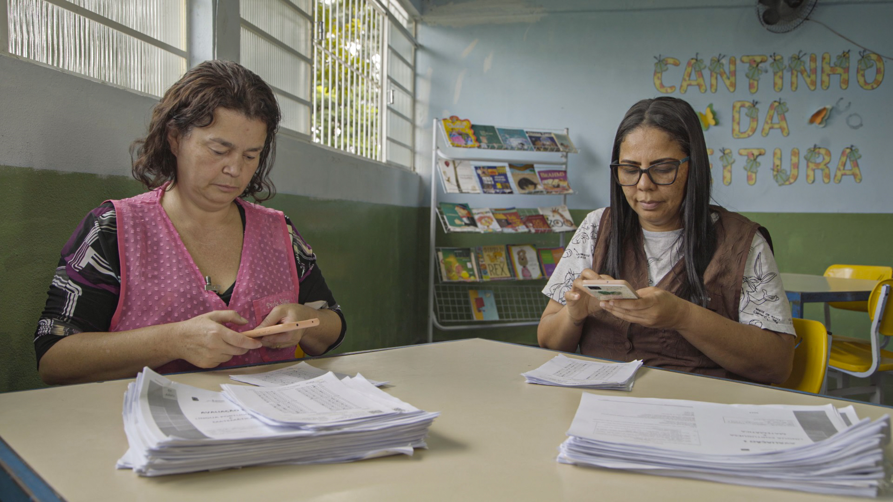
Correção por Áudio
O profissional indicado pela escola realizará a aplicação com coleta dos áudios no celular.
Em 4 passos, o Cartão é corrigido e vocês já têm o resultado:
Escanear o QR code (como o cardápio de um restaurante) e clicar no link que irá aparecer.
Selecionar o estudante.
Gravar a avaliação.
Corrigir a avaliação.
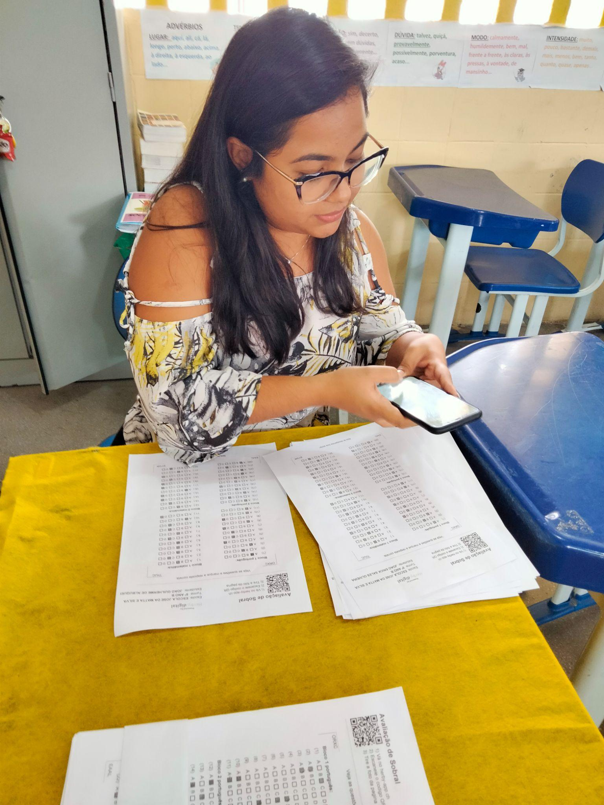
Passo 1 — Ler o QR CODE
Apontar a câmera do celular para o QR CODE da turma e clicar no link que irá aparecer.
E se o link não aparecer?
Acessar {{herby.url_scan}} no seu navegador de internet e realizar o escaneamento direto por lá.
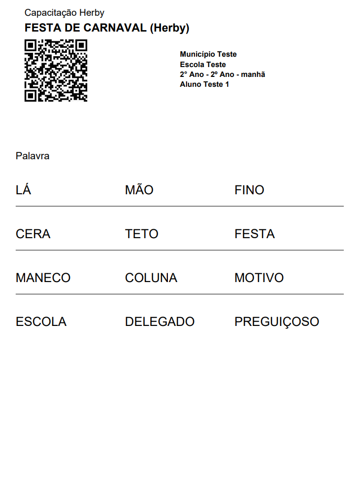
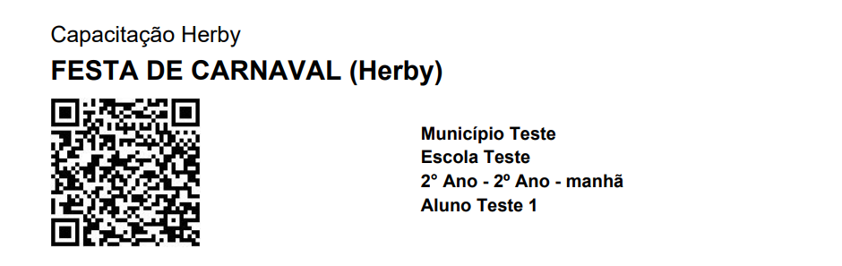
Passo 2 — Selecionar o estudante
Após escanear o QR CODE da turma, clicar no nome do estudante para iniciar a aplicação.
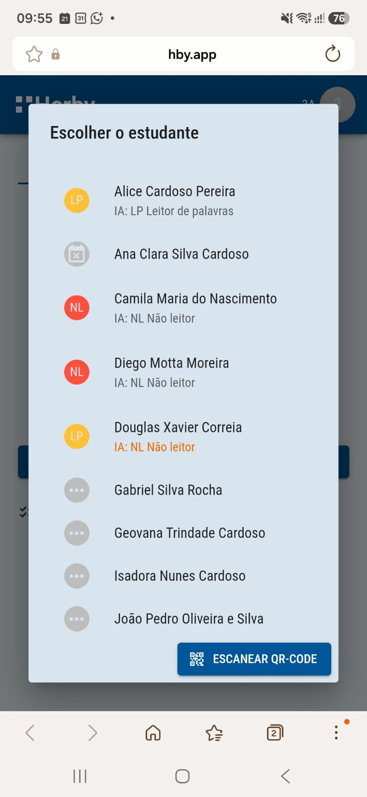
Passo 3 — Testar áudio
Confirme que o estudante está pronto para começar a gravação clicando em Entendido.
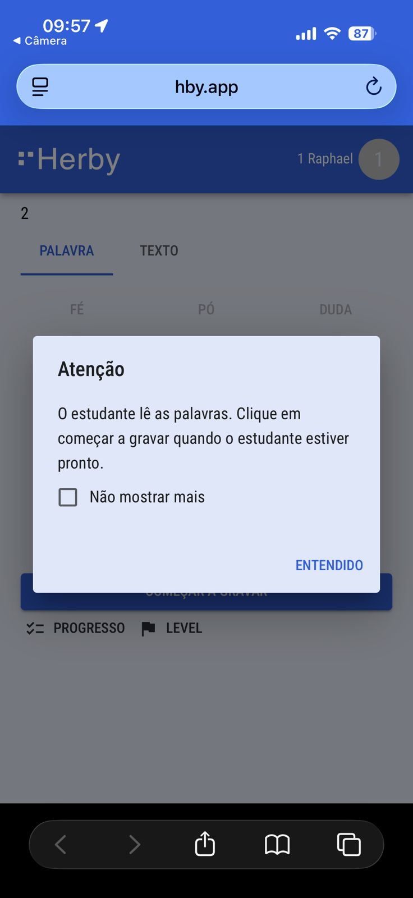
Passo 3 — Testar áudio
Clique no botão Testar áudio para verificar se o ambiente está adequado para iniciar a avaliação.
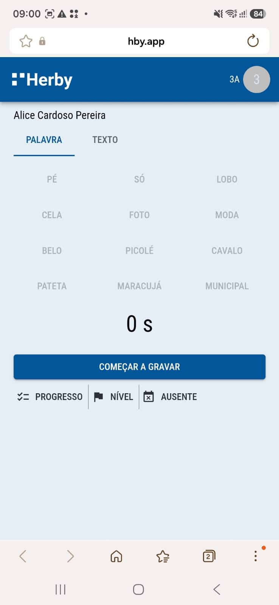
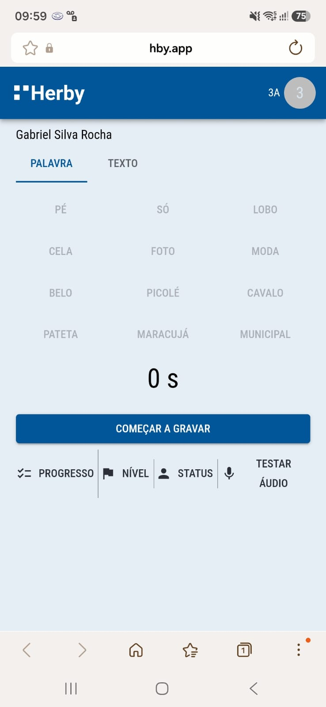
Passo 3 — Testar áudio
Peça ao estudante que diga seu nome ao clicar em Começar a gravar. Finalize a gravação e aguarde o feedback.
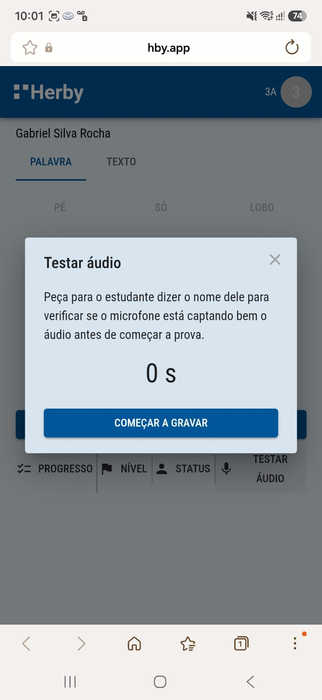
Passo 3 — Testar áudio
Quando receber um feedback positivo sobre a gravação do áudio, pode fechar a janela e iniciar o teste.
É muito importante estar em um ambiente silencioso, com o microfone próximo ao estudante e as notificações do celular desabilitadas.
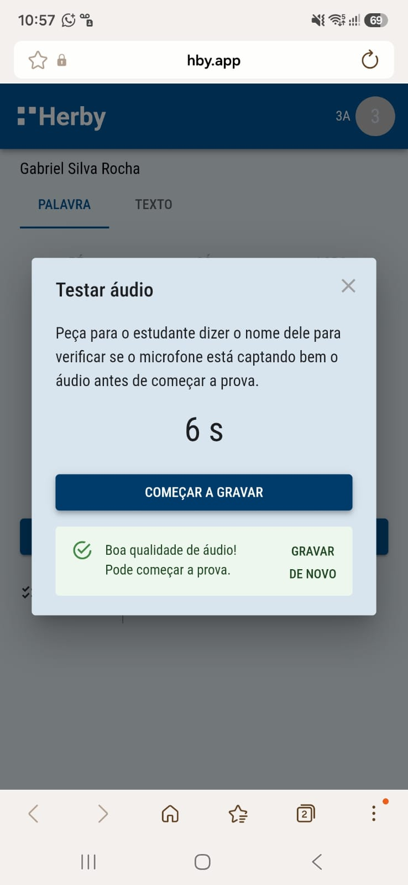
Passo 4 — Gravar a avaliação
Clique no botão Começar a Gravar assim o estudante pode dar início a leitura da lista de palavras.
Passo 4 — Gravar a avaliação
Assim que o estudante terminar a leitura, clique no ícone Leitura Finalizada.
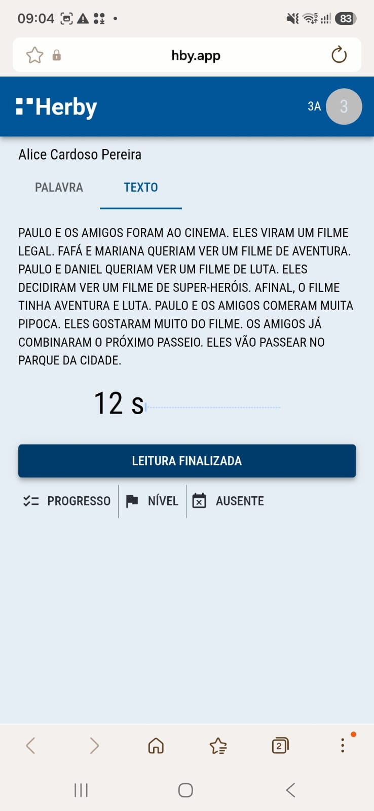
Passo 4 — Gravar a avaliação
Agora é só repetir o processo para a leitura do pequeno texto.
Passo 3 — Gravar a avaliação
Confirme que o estudante está pronto para começar a gravação clicando em Entendido
Passo 5 — Corrigir a avaliação
Agora você pode ouvir novamente cada item da prova de fluência, e selecionar o nível que o estudante se encontra.
Depois é só clicar no botão Salvar Nível.
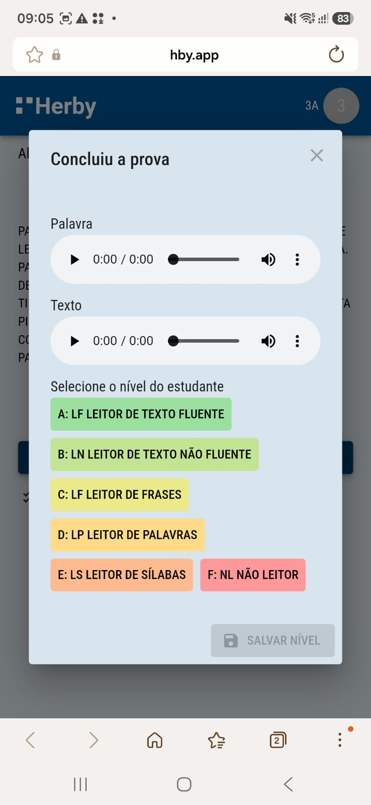
Marcação de ausência ou transferência
Caso o aluno não esteja presente no dia da aplicação ou tenha sido transferido, basta selecionar seu nome na lista e, em seguida, clicar no botão status.
Marcação de ausência ou transferência
Selecione a opção desejada e a página retornará automaticamente para a seleção de um novo estudante.